Block KUMIKI の紹介ページへ戻る ・ DNGG-studio のアプリ一覧
Block KUMIKI の遊び方
Block KUMIKI は、8×8 の盤面にピースを置いて、縦か横の1列をそろえて消すブロックパズルです。時間制限はありません。アカウントの登録もいりません。
画像の1のような赤い番号は、押すところや見るところと、説明の番号です。
この説明は バージョン 1.1.4 の画面に合わせています（2026年11月24日）。画面はこれから変わることがあります。画像の得点や記録は見本です。
- はじめに：タイトル画面
- ゲーム画面の見かた
- ピースを置いて消す
- 得点・コンボ・チャンス・グッド
- レベルとステージ
- ステージの仕掛け（ギミック）
- リトライ
- ゲームオーバーとふりかえり
- ステージ別組木
- 詰め組木
- ベスト記録と友達への共有
- 設定
- 広告について
- よくある質問
1. はじめに：タイトル画面
アプリを開くとタイトル画面になります。はじめての方は「▶ ゲームスタート」を押してください。
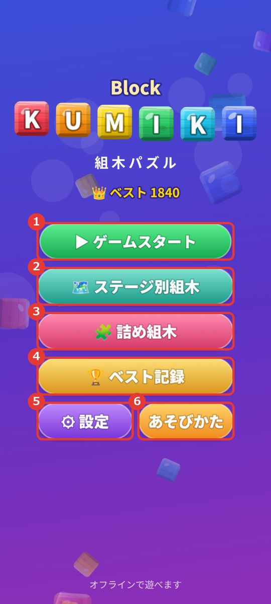
1通常モードを始める 2好きなステージだけ遊ぶ 3パズル問題を解く 4ベスト記録を見る 5設定 6遊び方の短い説明
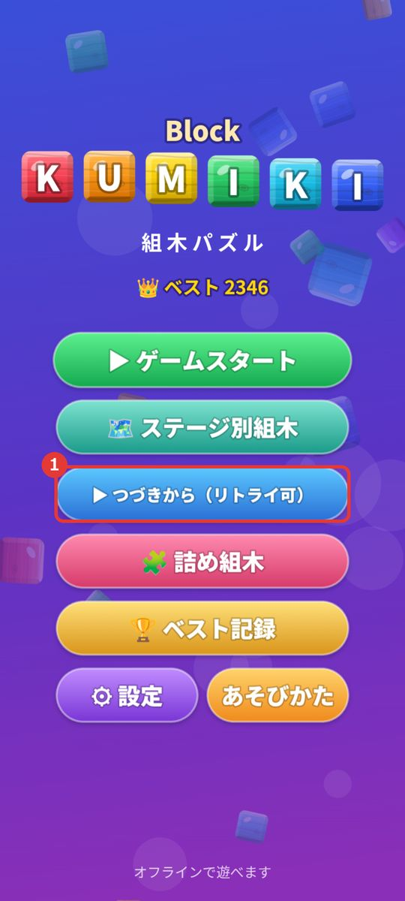
途中のゲームがあるときは1「▶ つづきから」が出て、続きを遊べます。ゲームオーバーでリトライが残っているときは「（リトライ可）」と出ます
「つづきから」は、アプリを開いている間だけ使えます。アプリを終了すると、途中のゲームは消えます（ベストスコア、ベスト記録、詰め組木の進み具合、設定は残ります）。
2. ゲーム画面の見かた
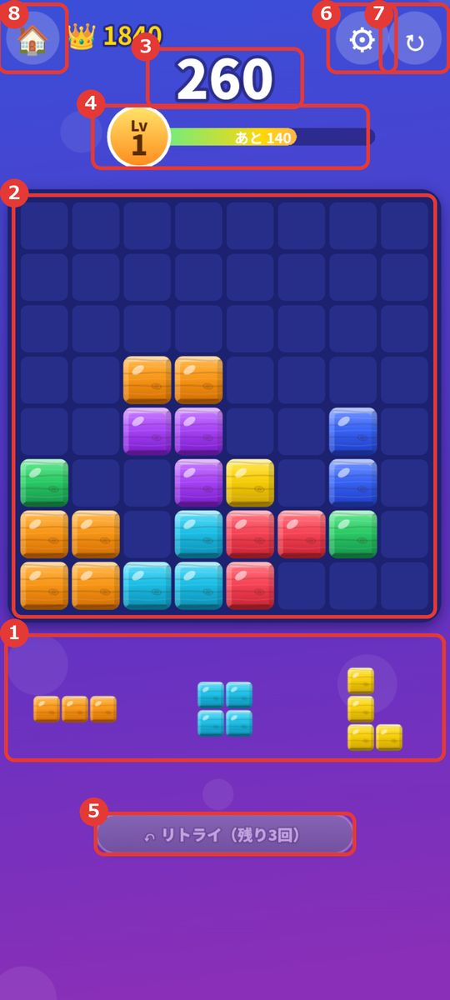
1置き場の3つのピース 2盤面（8×8） 3スコア 4レベルと、次のレベルまでの点 5リトライ 6設定 7最初からやり直す 8タイトルへ戻る
- 左上の 👑 は、ベストスコアです
- 7「↻」を押すと「最初からやり直しますか？」と確認が出ます。まちがえて押しても「いいえ」で戻れます
- スマホの戻るボタンは、設定などを開いているときは閉じる、ゲーム中はタイトルへ、タイトルではアプリを閉じる、の順に働きます
3. ピースを置いて消す
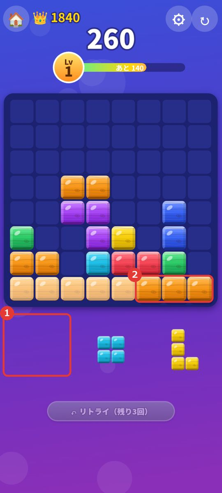
1置き場のピースを指で押さえたまま動かし、2置きたい場所で指を離します
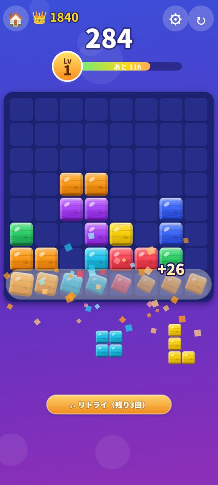
縦か横の1列がそろうと消えて、得点になります
- 置き場の3つのピースのうち、好きなものを押さえて盤面へ動かします。置く順番は自由です
- 動かしている間、ピースは指の少し上に出ます。置ける場所に来ると、盤面に置く位置が表示されます
- 指を離すと置けます。置けない場所で離すと、ピースは置き場に戻ります
- 3つとも置くと、新しい3つが出ます
新しく出る3つは、置く順番と場所を工夫すれば、必ず3つとも置ける組み合わせになっています。行きづまりそうなときは、3つ全部の置き方を考えてから置いてみてください（盤面がほとんど埋まっているときは、そうならないこともあります）。
4. 得点・コンボ・チャンス・グッド
同時にたくさん消す
| 同時に消した列 | 得点 | ほめ言葉 |
|---|
| 1列 | 20 | － |
| 2列 | 60 | ナイス! |
| 3列 | 120 | グレート! |
| 4列 | 200 | エクセレント! |
- ピースを置くだけでも、1マスにつき2点が入ります
- 盤面のブロックを全部消すと「オールクリア!」で、500点のボーナスが入ります
- レベルが1つ上がるごとに、得点が15％ずつ増えます（Lv.2 は 1.15倍、Lv.3 は 1.3倍）
コンボ
続けて消すと「コンボ ×2」「×3」と増え、列を消した得点がその数だけ倍になります。ピースを3つ続けて置いて1列も消せないと、コンボは終わります。
チャンス!
金色に光って「チャンス!」と出たピースは、うまく置くと2列以上を一気に消せます。
グッド!
先のことまで考えていちばんよい場所に置くと、👍 と「グッド!」が出て、ボーナスが入ります。どこに置いても同じような場面では出ません。
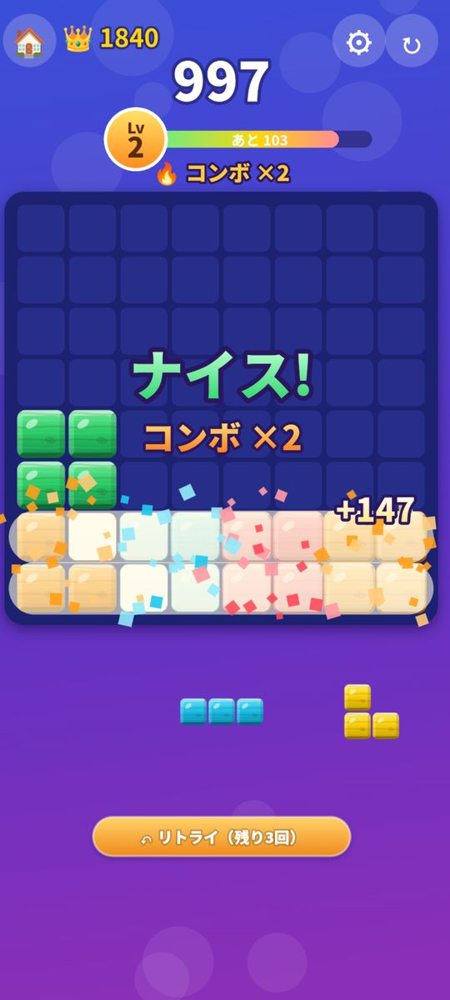
2列を同時に消して「ナイス!」、続けて消したので「コンボ ×2」
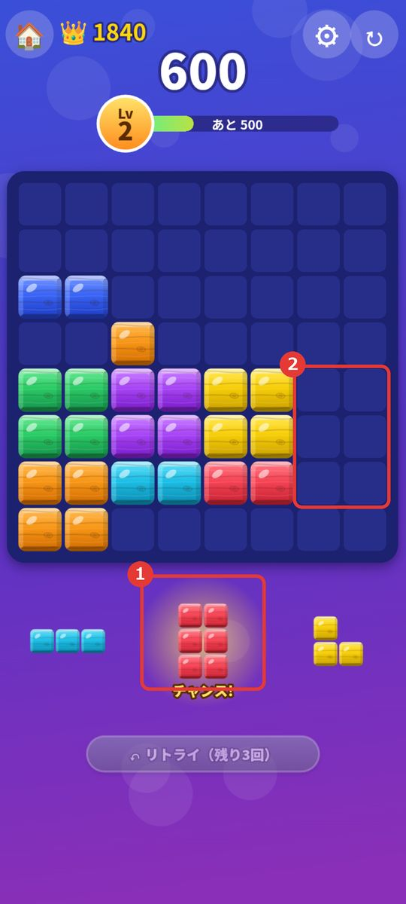
1金色に光るピースを2に置くと、3列を一気に消せます
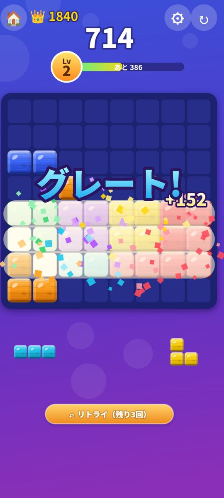
3列を同時に消して「グレート!」
5. レベルとステージ
- 得点がたまるとレベルが上がります。レベルが低いうちは大きめのピースが多く、上がるほど、はめにくいピースが増えます
- 5レベルごと（Lv.6・11・16…）にステージが変わります。背景・音楽・ブロックの色が変わり、新しい形のピースと仕掛け（ギミック）が加わります
- 10番目のステージのあとは、「からくり屋敷」から順にくり返します
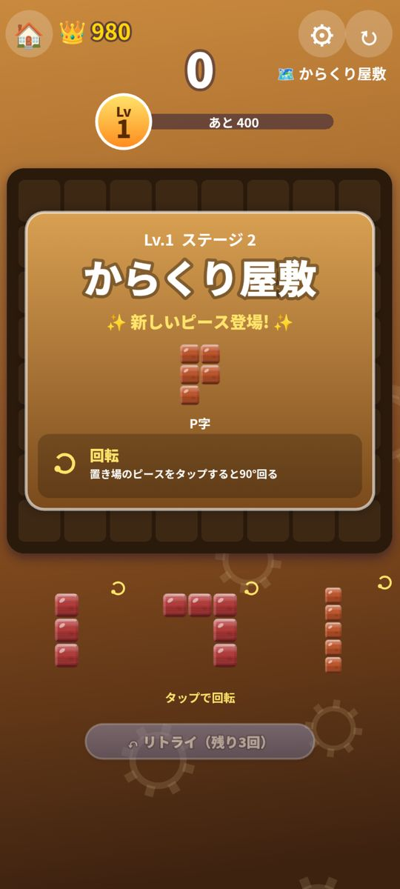
ステージが変わると、新しい形のピースと仕掛けの説明が出ます。少し待つと消えます（画像はステージ別組木で始めたとき）
6. ステージの仕掛け（ギミック）
1番目の「はじまりの空」には仕掛けがありません。2番目からのステージには、それぞれちがう仕掛けがあります。
ステージ2 からくり屋敷：回転
置き場のピースを動かさずにタップすると、90°回ります。何回でも回せます。
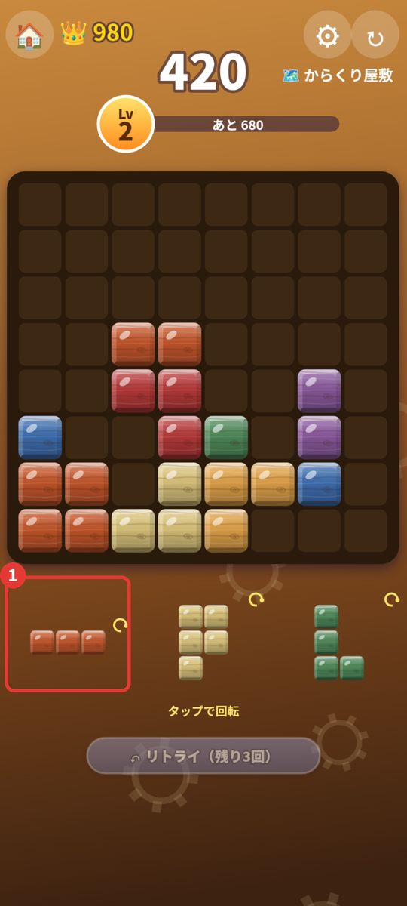
1をタップすると…
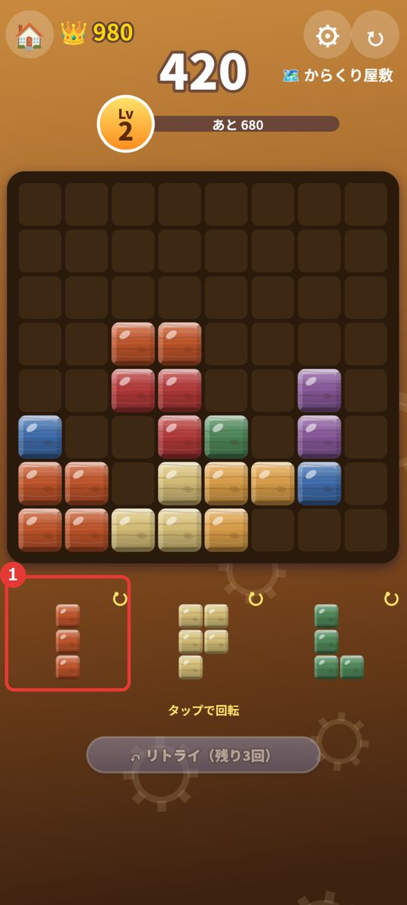
1縦向きになりました
ステージ3〜5：宝箱・泡・花
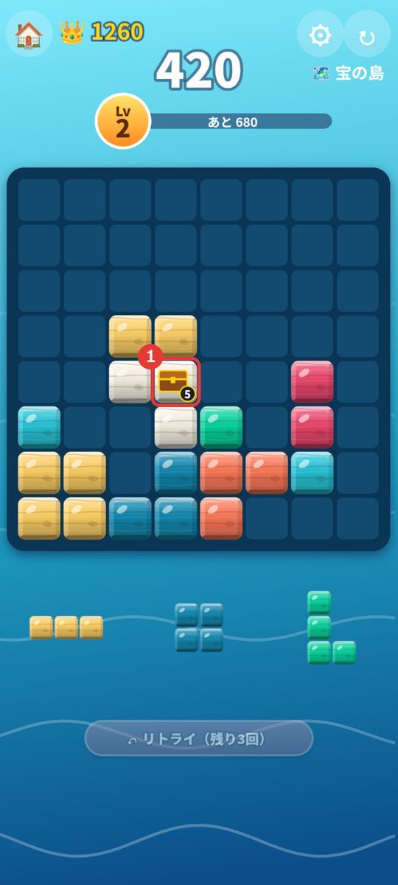
3 宝の島（宝箱）
1宝箱の数字は、消えるまでの残りの手数です。最初は7手。その前に宝箱のある列を消すと、ボーナスとリトライ+1
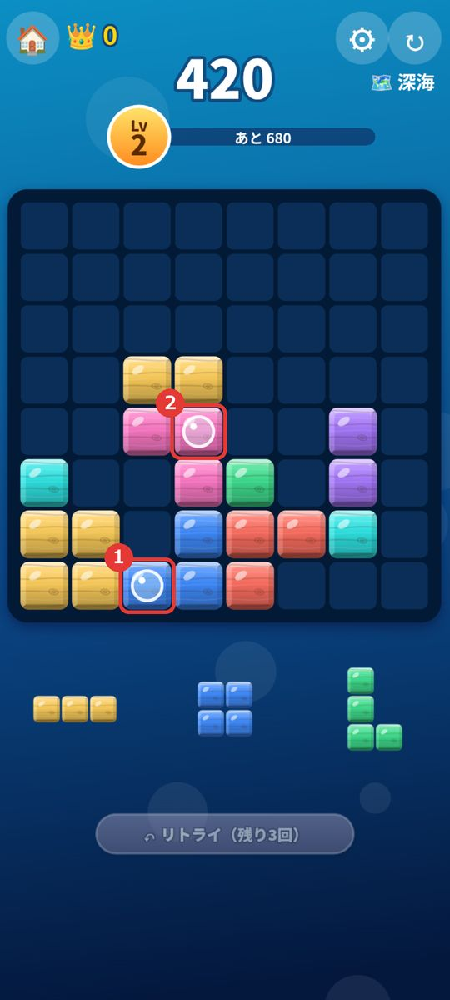
4 深海（泡ブロック）
12を消すと、上下左右のブロックも一緒に消えます
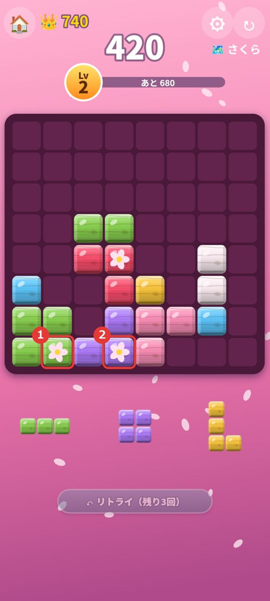
5 さくら（花ブロック）
12のように、2つ以上をいっしょに消すとボーナス
ステージ6〜8：星・溶岩・氷
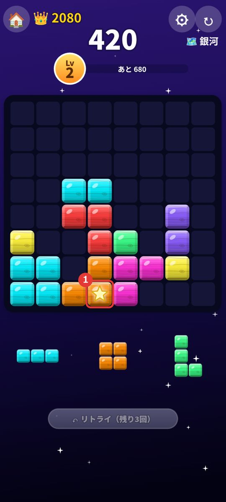
6 銀河（星ブロック）
1を消すと、その縦と横の1列が全部消えます
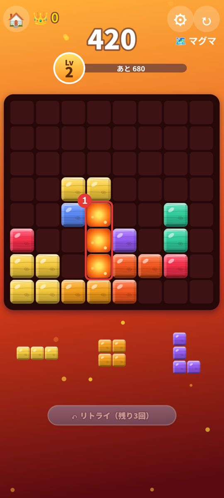
7 マグマ（溶岩）
1新しいピースが出るたびに広がります。列をそろえて消しましょう
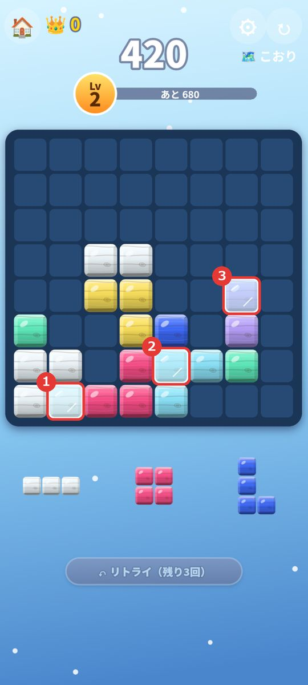
8 こおり（氷ブロック）
1〜3は、1回消しても氷が割れるだけ。もう1回消すとなくなります
ステージ9・10：時限ブロック・虹
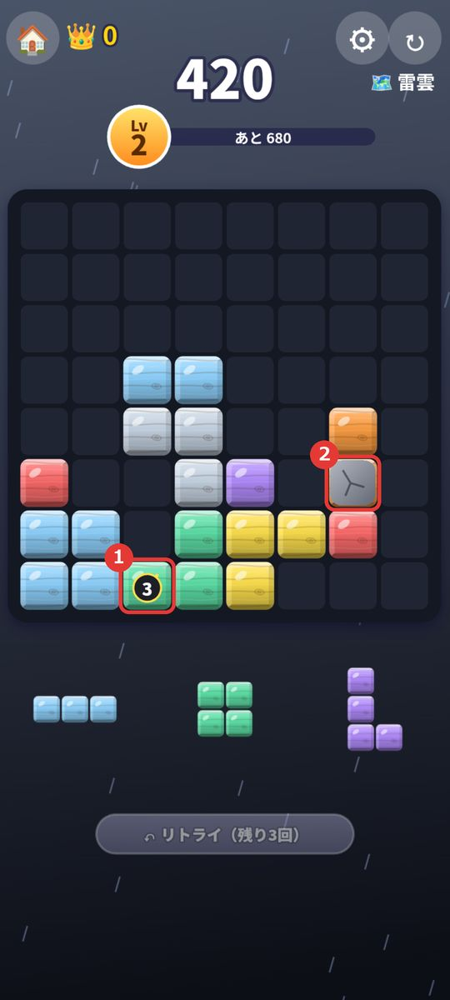
9 雷雲（時限ブロック）
1の数字は、ピースを置くたびに減ります。0になる前に消すと高得点。間に合わないと2石になり、2回消さないとなくなりません
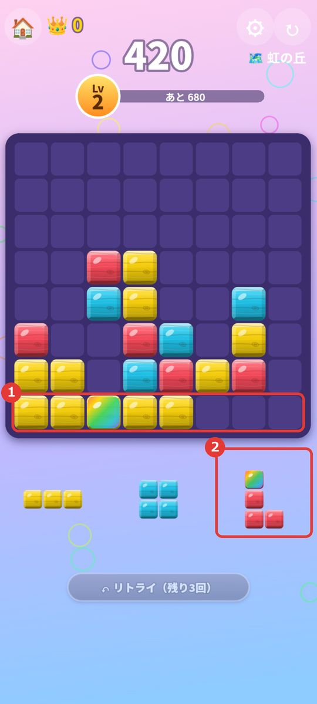
10 虹の丘（虹ブロック）
1のように1列を全部同じ色で消すと、その列の得点が3倍。虹ブロックはどの色にもなります。2のように虹の付いたピースも出ます
7. リトライ
置きまちがえたときは、今の3つのピースが出たときまで戻せます。1ゲームに3回までです（宝箱で増えることがあります）。
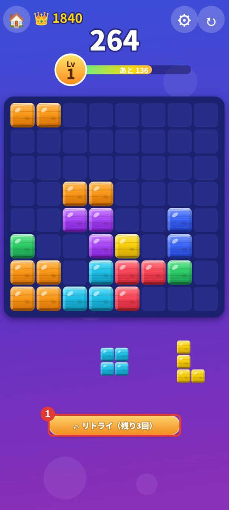
1「↶ リトライ」を押します。3つのうち1つでも置くと押せるようになります
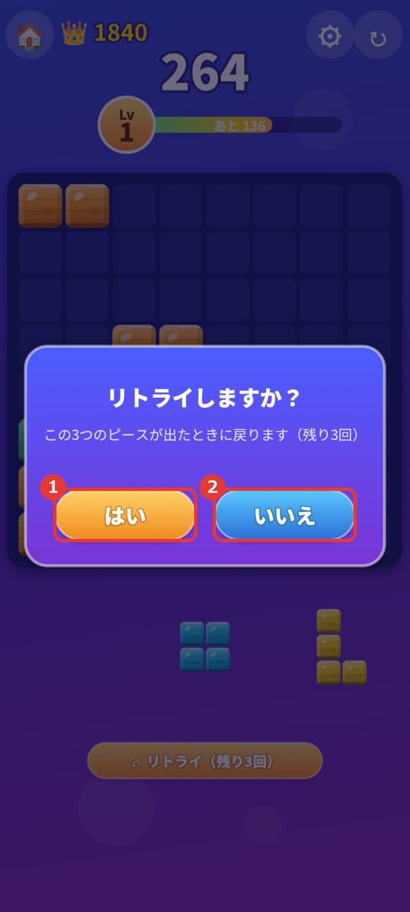
1「はい」で戻ります 2「いいえ」でそのまま続けます
- 3つとも置いて新しいピースが出たあとは、その前には戻れません
- 戻ると、その間に取った得点も元に戻ります
8. ゲームオーバーとふりかえり
残っているピースが、どこにも置けなくなるとゲームオーバーです。
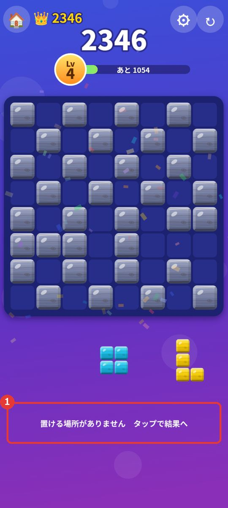
盤面が灰色になり、1のお知らせが出ます。画面をタップするか、少し待つと結果に進みます
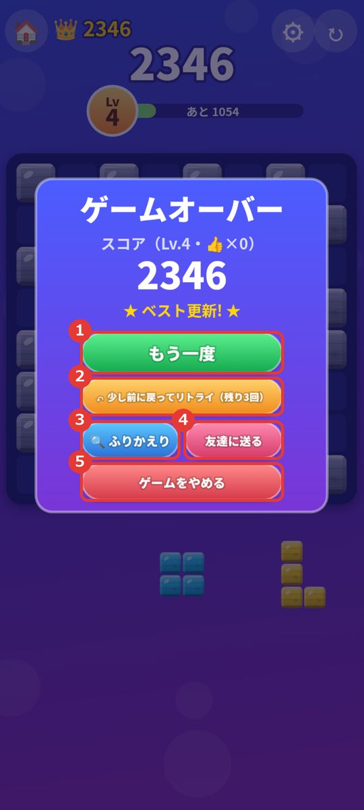
1はじめから遊ぶ 2少し前に戻ってリトライ 3ふりかえり 4友達に送る（ベストを更新したとき） 5ゲームをやめる
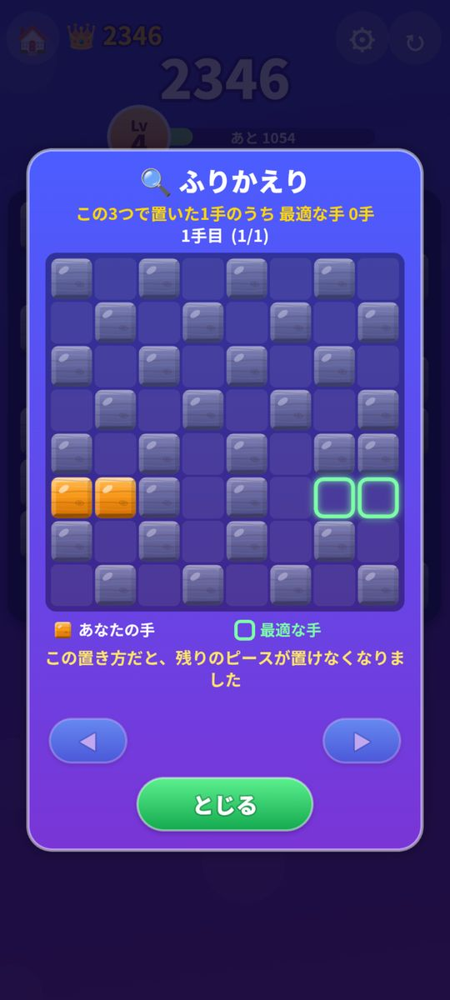
ふりかえり：色の付いたブロックが「あなたの手」、緑の枠が「最適な手」です。下に理由が出ます。◀ ▶ でほかの手も見られます
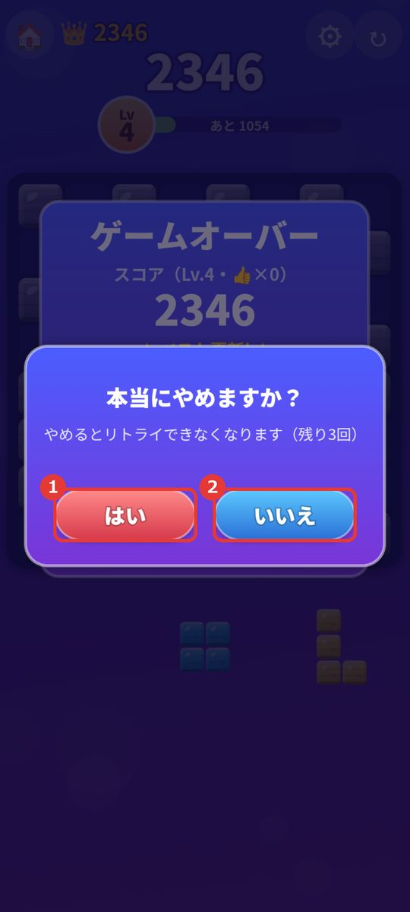
リトライが残っているときに「ゲームをやめる」を押すと確認が出ます。1「はい」でタイトルへ戻り、リトライできなくなります 2「いいえ」で結果に戻ります
- 「ふりかえり」は、最後に出た3つのピースで置いた手を、最適な手と比べます。結果の画面で「分析中…」の間は、少し待ってください
- ゲームオーバーのあとでも、リトライが残っていれば続けられます
9. ステージ別組木
10のステージから1つを選んで、そのステージだけを遊びます。ステージは変わりません。ベストスコアはステージごとに記録します。
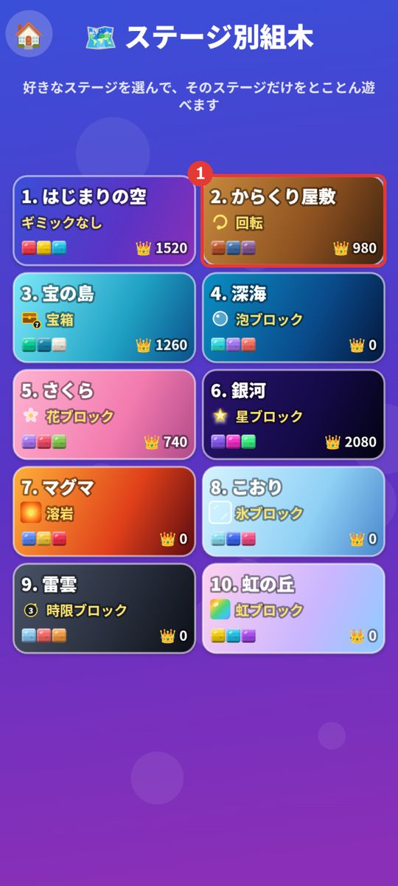
タイトルの「🗺 ステージ別組木」を押し、1のように遊びたいステージを押します。右下の 👑 はそのステージのベストスコアです
はじめから全部のステージを選べます。途中のゲームがあるときは「新しいゲームを始めますか？」と確認が出ます。「はい」を押すと、途中のゲームの続きは消えます。
10. 詰め組木
決まったピースを全部使って、盤面を空にするパズルです。「入門・初級・中級・上級・達人」の5段階に10問ずつ、全部で50問あります。
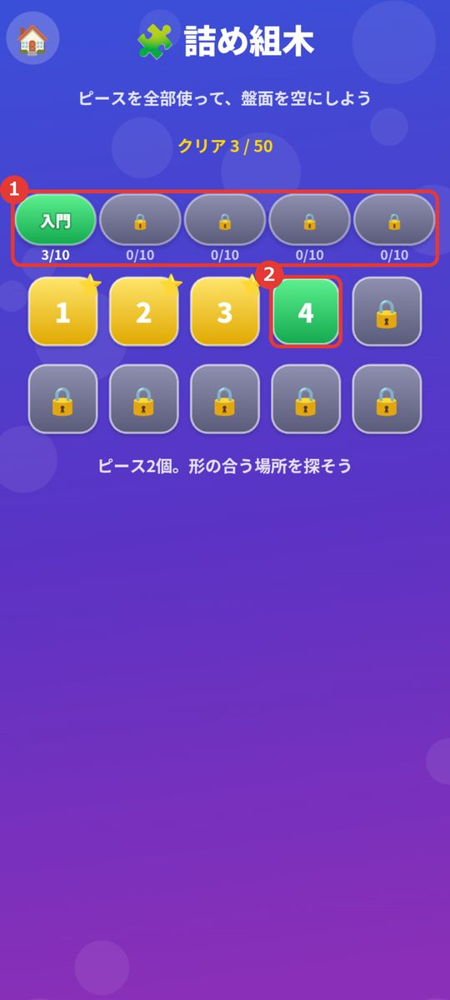
1段階を選ぶ 2問題を選ぶ。⭐ はクリアした問題、🔒 は前の問題をクリアすると開きます
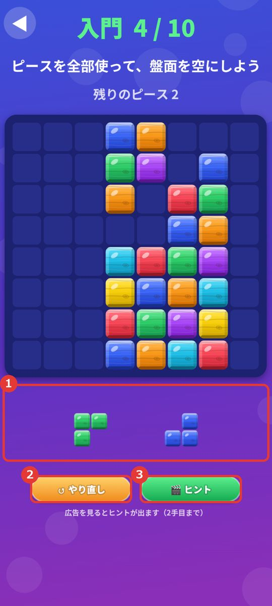
1使うピース（全部使う） 2やり直し 3ヒント。左上の ◀ で一覧に戻ります
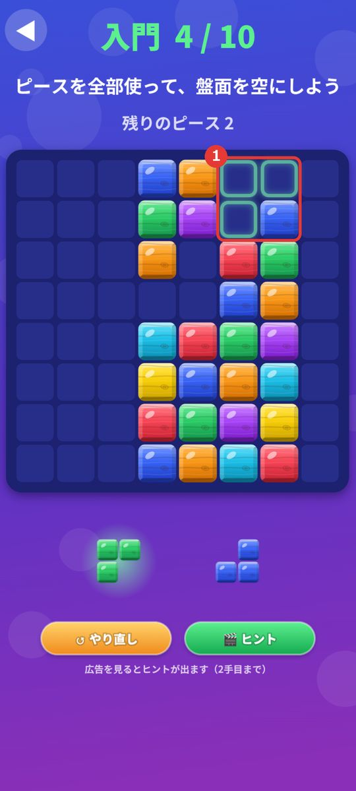
ヒント：光っているピースを、1の光る場所に置きます
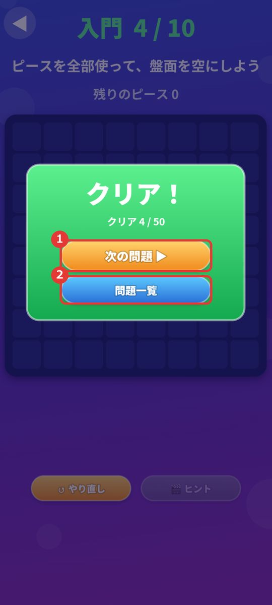
クリア！ 1次の問題へ 2一覧へ戻る
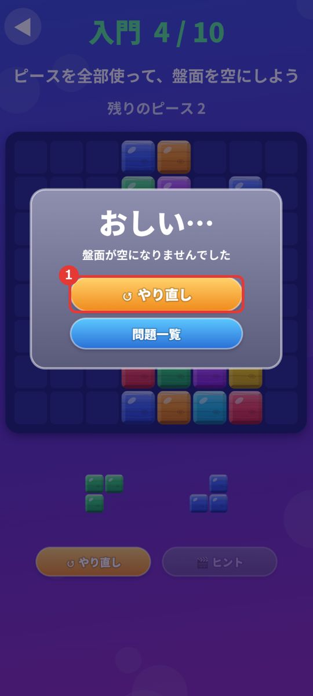
盤面が空にならなかったときは、1「↺ やり直し」で何回でも挑戦できます
- 列がそろうと消えるのは、通常モードと同じです。先に列を消さないと置けないピースもあるので、置く順番が大事です
- ヒントは、広告を見ると次の1手が出ます。2手目まで使えます
- 「この盤面からは解けません。やり直しましょう」と出たら、「やり直し」を押してください。このときは広告は出ません
- 通常モードの途中で詰め組木を遊んでも、タイトルに戻れば「つづきから」で続きを遊べます
11. ベスト記録と友達への共有
通常モードとステージ別組木では、ベストを更新してゲームオーバーになると、そのときの盤面の画像を保存します。
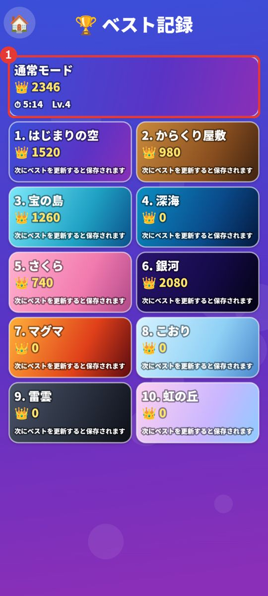
タイトルの「🏆 ベスト記録」を押すと一覧が出ます。1のように画像のある記録を押します
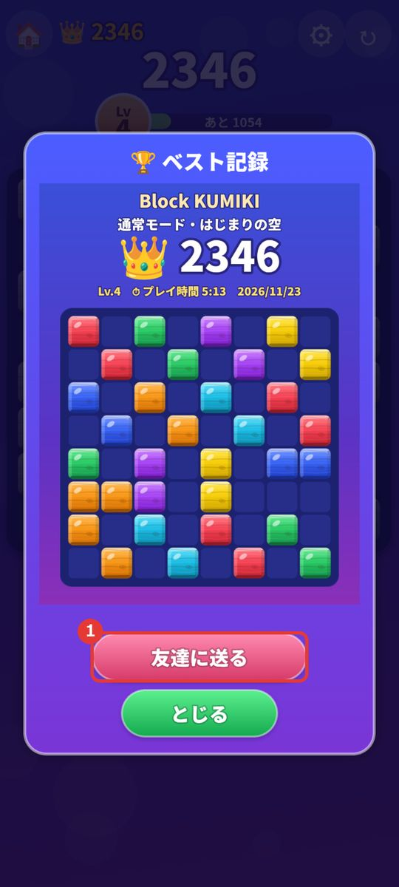
1「友達に送る」を押し、LINE やメッセージなど送るアプリを選びます
- 保存するのは、通常モードと各ステージの最新の1枚です。詰め組木の記録はありません
- 「次にベストを更新すると保存されます」と出ている記録には、まだ画像がありません
- ゲームオーバーの結果の画面にある「友達に送る」からも、同じように送れます
12. 設定
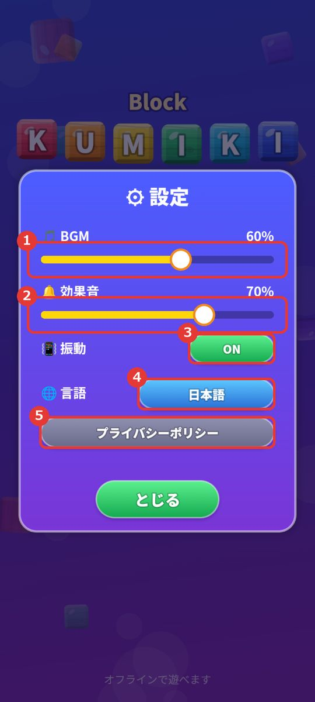
1BGM の音量 2効果音の音量（ほめる声も） 3振動の ON・OFF 4言語 5プライバシーポリシー
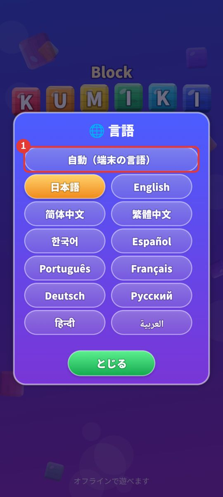
12の言語から選べます。1「自動（端末の言語）」にすると、スマホの言語に合わせます
- タイトルの「⚙ 設定」か、ゲーム画面の右上の「⚙」で開きます
- 音量は、丸いつまみを左右に動かします。0% にすると音が出なくなります
- 広告の同意が必要な地域では、「広告のプライバシー設定」も出ます
13. 広告について
無料で遊べるかわりに、次のときに広告が出ることがあります。ピースを置いている途中には出ません。
- 通常モード・ステージ別組木：ゲームオーバーの結果の画面が開くとき（リトライしてすぐにまたゲームオーバーになったときは出ません）
- 詰め組木：15回遊ぶごとに、次に画面が切り替わるとき
- 詰め組木のヒント：自分で「🎬 ヒント」を押したとき
14. よくある質問
インターネットにつながなくても遊べますか？
遊べます。つながっていないときは広告が出ません。詰め組木のヒントは、1手目だけ広告なしで出ます。
記録はどこに保存されますか？
この端末の中だけです。運営者のサーバーには送りません。アプリを消すと、記録も消えます。ほかの端末へ移すことはできません。
アプリを閉じたら、途中のゲームが消えました
途中のゲームは、アプリを終了すると消えます（ほかのアプリを使っている間に、スマホが自動でアプリを終了することもあります）。ベストスコアやベスト記録は残ります。
リトライのボタンが押せません
今の3つのピースを1つも置いていないときは押せません。「残り0回」のときは、そのゲームではもう使えません。
音が出ません
スマホの音量（メディアの音量）と、設定の「BGM」「効果音」を確かめてください。
記録を全部消したい
スマホの「設定」→「アプリ」→「Block KUMIKI」→「ストレージ」で、データを消してください（機種によって名前がちがうことがあります）。設定や詰め組木の進み具合も消え、元に戻せません。
データの扱いを詳しく知りたい
プライバシーポリシーをご覧ください。
お問い合わせ
DNGG-studio：dngg.studio@gmail.com
紹介ページへ戻る